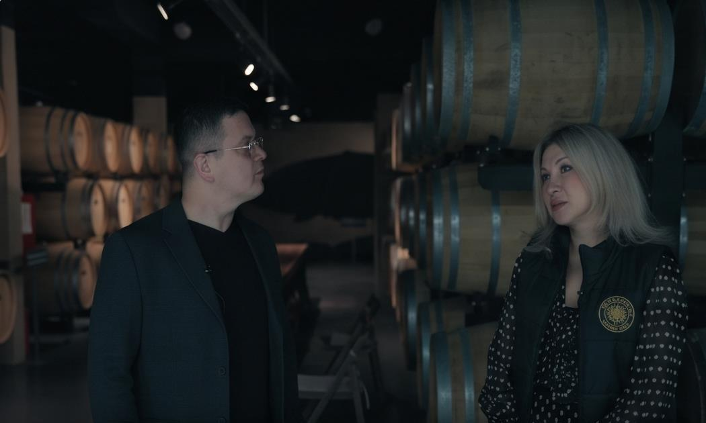
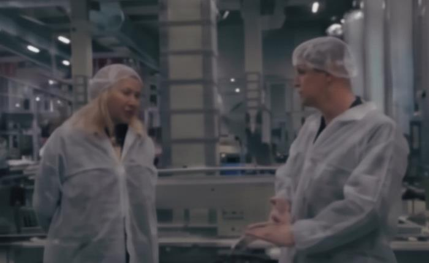
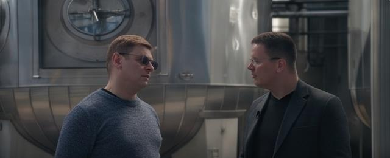
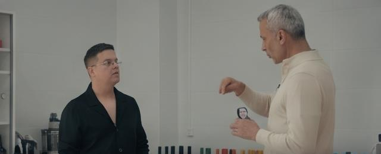

Понять профессию
до первого шага.
Увидеть рабочее место, узнать требования и условия, услышать истории тех, кто уже прошёл этот путь.
Федеральный медиапроект
ПРОИЗВОДСТВО / ЛЮДИ / КАРЬЕРАЗнакомим с предприятиями России и показываем, как здесь работают, осваивают профессию и строят карьеру.

01 / О проекте
За проходной предприятия — целый мир технологий, профессий и человеческих историй. Мы открываем его зрителю.
«Вектор роста» — документально-профориентационный проект о российских предприятиях. Через реальные рабочие процессы и прямой разговор с людьми показываем возможности для профессионального развития в своей стране.
Увидеть рабочее место, узнать требования и условия, услышать истории тех, кто уже прошёл этот путь.
Познакомить будущих сотрудников с командой, производством и возможностями роста через открытый разговор.
02 / Внутри выпуска
погружения в жизнь предприятия
и серия коротких роликов

Цеха, оборудование и настоящие рабочие процессы.

Истории рабочих, инженеров и руководителей.

Условия труда, обучение и забота о сотрудниках.
Съёмки без остановки производства, с соблюдением техники безопасности и коммерческой тайны.
03 / Практическая польза
Каждый выпуск помогает увидеть за названием профессии конкретные условия и перспективы.
Оплата труда по специальностям и система мотивации.
Требования к кандидатам, образование и стажировки.
Реальные карьерные истории — от рабочего до руководителя.
Соцпакет, обучение, условия труда и корпоративная культура.
Потребности предприятия сегодня и на горизонте 3–5 лет.
05 / Для предприятий
Предлагаем стать героем следующего выпуска и показать производство глазами вашей команды.
Давайте познакомимся
Расскажите о своей команде, производстве и профессиях.
Обсудим возможность участия в проекте.